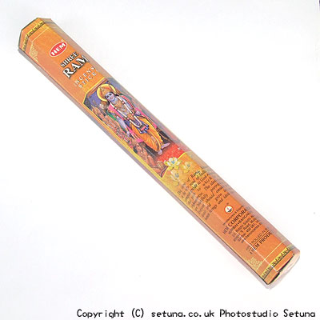

近くでそのまま嗅ぐと、爽やか系のいい香りがします。
シトラス系ですね。
でも火を点けると上品なサンダルがゆっくりと香り始めます。
上品なサンダルが薄く細く、ほのかに香り続けながら、奥底の方でカンラン科の香りが甘さを引き立てているようです。
他社ですがTurasi社のサンダルによく似た感じがします。
精油の配合や配分が似ているのかもしれません。
Turasi社との違いはほのかにベルガモットの香りがする所ですね。
分かりづらいかもしれませんが、これが白檀と共に香りを出すため、少し違った爽やかさを感じます。
やわらかな香りは部屋全体にゆっくりと広がってゆき、時間が経つにつれて少しづつですがベルガモットの香りもましてゆくような感じですね。
焚き終わりもベルガモットが香りながらゆっくりと消えてゆきます。
残り香はしばらく続くタイプですね。
